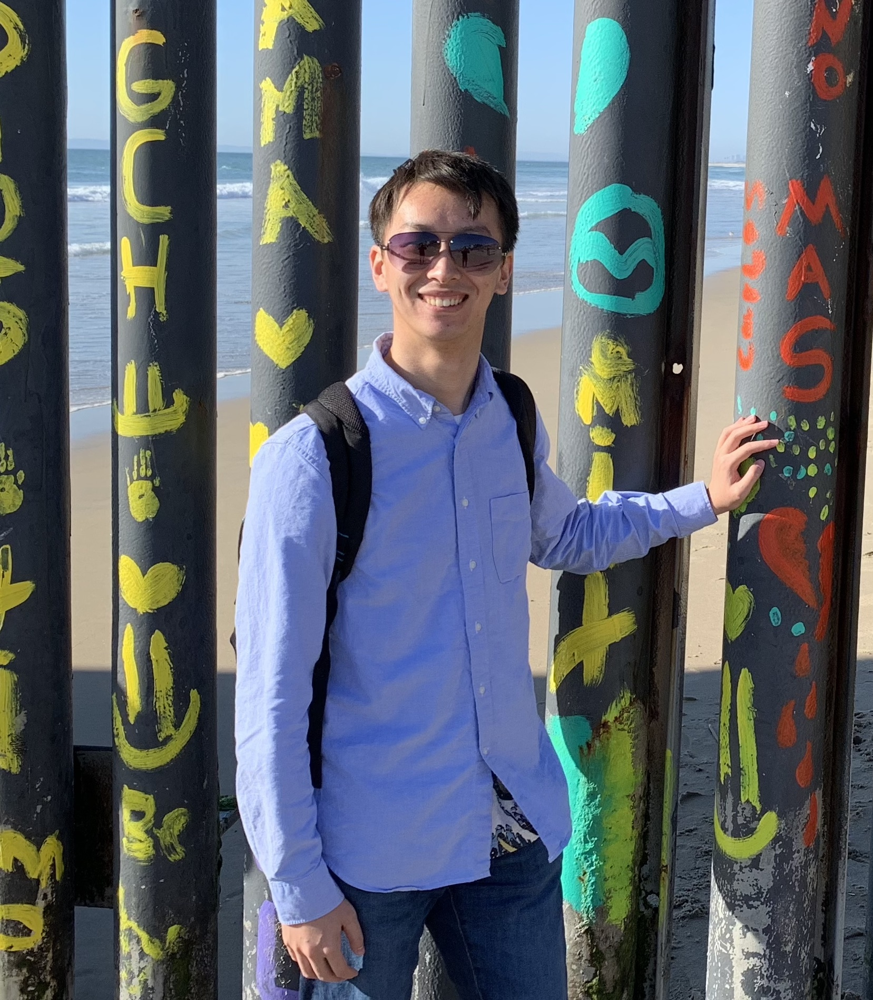
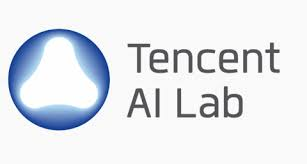
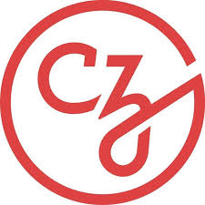

Xiangci Li
李向磁
About Me
I'm Xiangci Li, an Applied Scientist II at Amazon Web Services, where I specialize in natural language processing and large language model agents for software engineering. My Ph.D. research focused on knowledge-intensive natural language processing, including scholarly document processing, dialogue generation, and fact-verification. I am a leading expert in automatic related work generation and have extensive experience in retrieval-augmented generation systems.
I completed my Ph.D. in Computer Science at the University of Texas at Dallas under the supervision of Dr. Jessica Ouyang, focusing on knowledge-intensive natural language generation. Prior to that, I earned my M.S. in Computer Science from the University of Southern California, where I worked with Prof. Nanyun Peng at the Information Sciences Institute.
Throughout my career, I have gained valuable industry experience through internships at leading technology companies including Google, Amazon, Tencent, Baidu, and the Chan Zuckerberg Initiative. My work has resulted in numerous publications at top-tier conferences such as ACL, EMNLP, NAACL, EACL, and COLING.
- Large Language Models & Agents
- Knowledge-intensive NLP
- Scholarly Document Processing
- Dialogue Generation
- Fact Verification
- Retrieval-augmented Generation
-
Ph.D. in Computer Science, 2020-2024
University of Texas at Dallas, USA
-
M.S. in Computer Science, 2018-2019
University of Southern California, USA
-
B.S. in Computer Science & Neuroscience, 2013-2017
New York University Shanghai, China
Publications
Preprints & Manuscripts
Experience
-
Applied Scientist II
Amazon Web Services, Inc.
May 2024 - Present
- Evaluate and benchmark the performance of Amazon Q Developer Chat.
- Dataset creation and benchmarking for automatic code review generation.
- Dataset creation and benchmarking for automatic code CPU/memory performance optimization.
- Mentoring intern, Manan Suri, on query rewriting for software engineering.
-

Graduate Research Assistant
University of Texas at Dallas
Aug 2020 - Nov 2024
- Ph.D. in Computer Science under Prof. Jessica Ouyang
- Research focus: Knowledge-intensive Natural Language Generation
- Leading expert in automatic related work generation
-
Research Intern & Student Researcher
Google LLC
Jan 2024 - May 2024
- Biomedical evidence grounding
-
Research Intern
Google LLC
Sep 2023 - Jan 2024
- Project: Minimal Evidence Group Identification
- Hosts: Dr. Fan Zhang, Rajvi Kapadia; Collaborator: Sihao Chen
-

Applied Scientist Intern
Amazon.com Services LLC
May 2023 - Aug 2023
- Project: Large Language Model-Powered Conversational Product Search
- Mentors: Dr. Zhiyu Chen, Dr. Besnik Fetahu, Dr. Nikhita Vedula, Jason Choi, Dr. Shervin Malmasi
-

Research Intern
Tencent America, LLC
May 2022 - Aug 2022
- Project: Multi-source knowledge-based open-domain dialogue generation
- Paper accepted by LREC-COLING 2024
- Supervisor: Dr. Linfeng Song, Dr. Lifeng Jin & Dr. Haitao Mi
-
Graduate Research Assistant
University of Texas at Dallas
Dec 2020 - May 2021
- Project: Alexa Prize Socialbot Grand Challenge 4
- Supervisor: Prof. Gopal Gupta
- Built natural language understanding and conversation modules for Alexa chatbot.
-
Graduate Teaching Assistant
University of Texas at Dallas
Aug 2020 - Dec 2020
- Undergraduate-level Machine Learning
- Graduate-level Semantic Web
-
Student Worker & Research Assistant
University of Southern California, Information Sciences Institute
May 2018 - Aug 2020
- Advisors: Prof. Nanyun Peng & Dr. Gully Burns
- Worked on a series of projects on biomedical information extraction that led to publications:
- Biomedical experimental type classification
- Scientific discourse tagging
- Evidence fragment delineation
- Automatic scientific claim-verification
- Worked on collecting a challenging commonsense reasoning dataset for natural language processing models.
-
Research Scientist Intern
Baidu USA
Jan 2020 - May 2020
- Project: Context-aware Stand-alone Neural Spelling Correction
- Supervisor: Dr. Hairong Liu & Prof. Liang Huang
- Paper accepted by Findings of EMNLP 2020
-

Visiting Researcher
Chan Zuckerberg Initiative, Meta
May 2019 - Aug 2019
- Supervisor: Dr. Gully Burns
- Developed testing pipeline for a content-based recommendation system using clustering techniques.
-
Research Assistant
NYU-ECNU Institute of Brain and Cognitive Science at NYU Shanghai, Erlich Lab
May 2016 - Apr 2018
- Supervisor: Prof. Jeffrey Erlich & Prof. Zheng Zhang
- Project: Virtual Rat
- Built a recurrent neural network to model animal’s task switch cost phenomenon and analyzed the the model dynamics.
- Analyzed rat’s behavior data and found evidence to support the computational model.
- Trained mice and rats with behavior task on a regular basis.
- Contributed code for managing lab database using Python and MySQL.
-
Programmer
NYU Shanghai, iGEM team
Dec 2014 - Sep 2015
- iGEM: International Genetically Engineered Machine
- Supervisors: Prof. Wenshu Li & Prof. Jungseog Kang
- Project: SYNTHESIZED (Bacteria Music Generator)
- Played a key role in the team including designing developing the main product and team outreaches.
- Attended the iGEM Giant Jamboree in Boston, MA, and won a silver medal.
Contact
I'm always interested in discussing research collaborations, potential opportunities, or just connecting with fellow researchers in NLP and AI. Feel free to reach out!